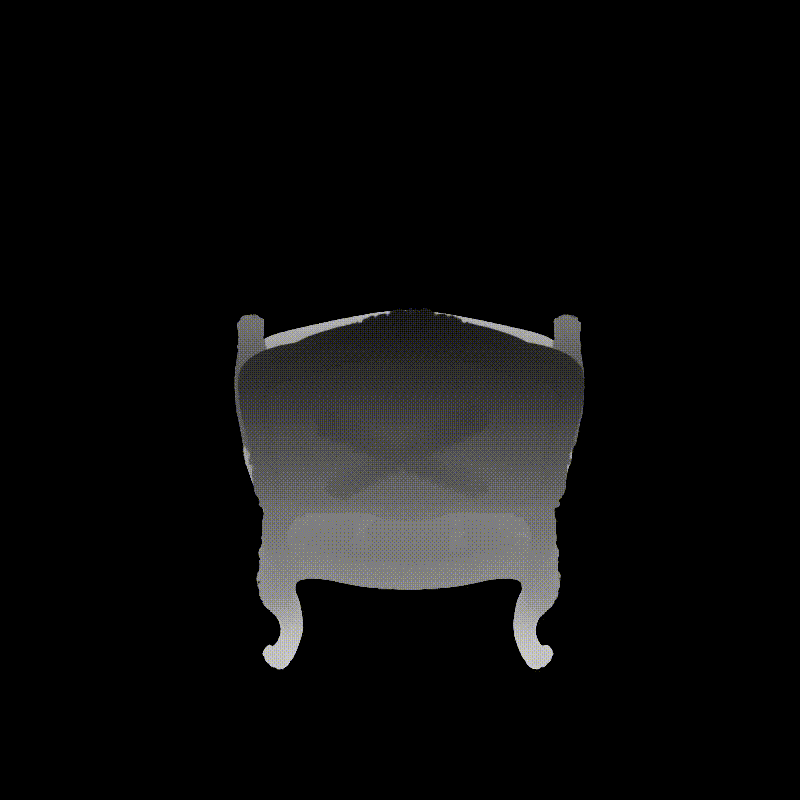
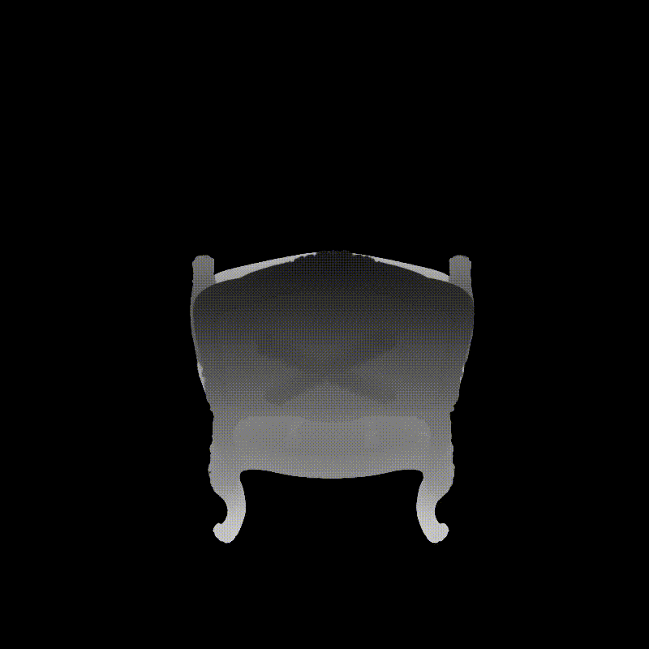
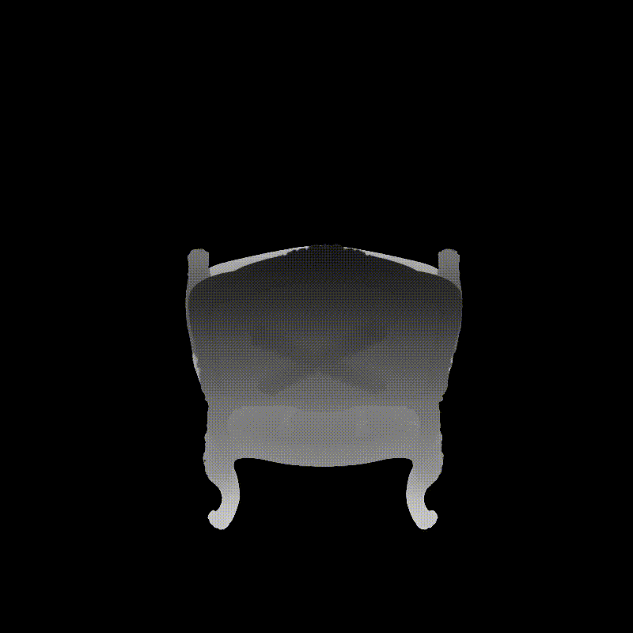

Results


 



With the popularity of implicit neural representations, or neural radiance fields (NeRF), there is a pressing need for editing methods to interact with the implicit 3D models for tasks like post-processing reconstructed scenes and 3D content creation. While previous works have explored NeRF editing from various perspectives, they are restricted in editing flexibility, quality, and speed, failing to offer direct editing response and instant preview. The key challenge is to conceive a locally editable neural representation that can directly reflect the editing instructions and update instantly. To bridge the gap, we propose a new interactive editing method and system for implicit representations, called Seal-3D, which allows users to edit NeRF models in a pixel-level and free manner with a wide range of NeRF-like backbone and preview the editing effects instantly. To achieve the effects, the challenges are addressed by our proposed proxy function mapping the editing instructions to the original space of NeRF models and a teacher-student training strategy with local pretraining and global finetuning. A NeRF editing system is built to showcase various editing types. Our system can achieve compelling editing effects with an interactive speed of about 1 second.

TBD